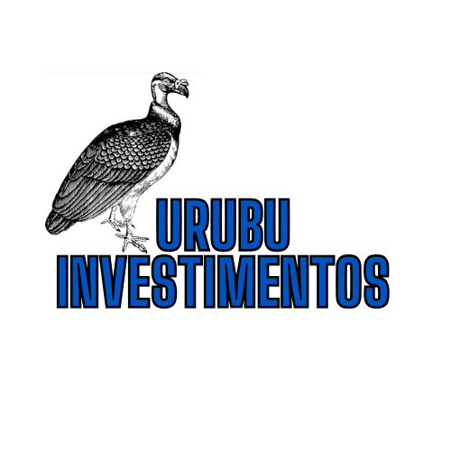
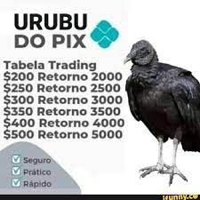

Seja bem-vindo ao nosso site de investimentos, o urubu é uma ave que
simboliza a visão aguçada e a oportunidade de enxergar além do óbvio.
Assim como o urubu, estamos aqui para ajudá-lo a identificar oportunidades
de investimento que podem passar despercebidas por outros. Prepare-se para
explorar um mundo de possibilidades financeiras e aprender a voar alto no
mercado de investimentos. Junte-se a nós nessa jornada única e descubra
como fazer seu dinheiro crescer como um urubu em busca de oportunidades.
Veja nossas opções de investimento abaixo
